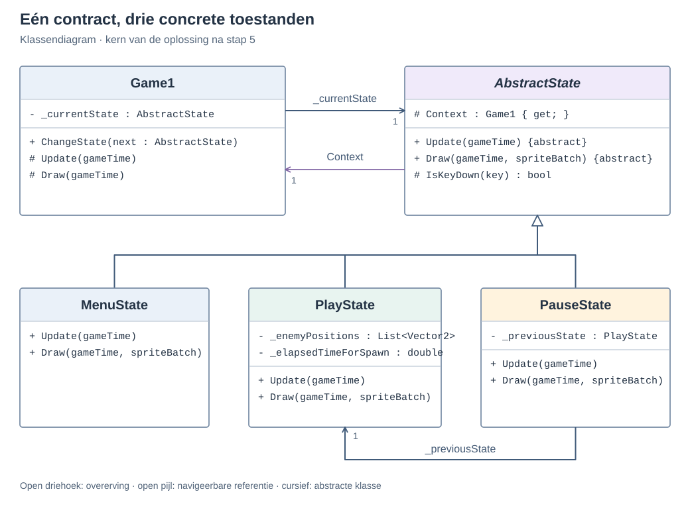
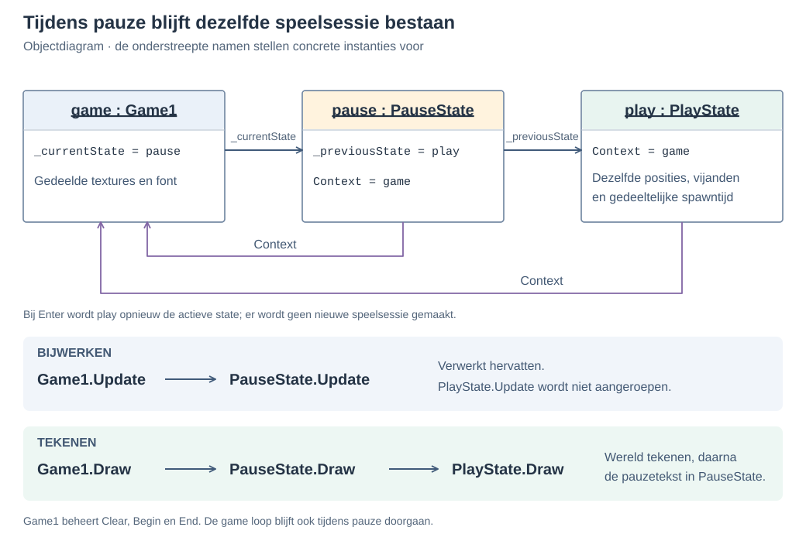

MonoGame - Van enum en if/else naar het State Pattern
| Startcode nodig? Je vindt de code van vorige les op Github. Heb je zelf een werkende vorige versie, dan is het sterk aangeraden om daarin verder te werken. |
Onze game heeft een menu, een bewegende spelwereld en een pauzestand. In Game1 bepaalt een enum welke takken van Update en Draw uitgevoerd worden. Dat werkt. In deze les onderzoeken we hoe we het gedrag van één toestand bij elkaar kunnen plaatsen, zodat we het gemakkelijker kunnen begrijpen en uitbreiden.
We passen het State Pattern toe. Daarbij gebruiken we opnieuw overerving, encapsulatie, associaties en polymorfisme uit de OO-herhaling. Zoals bij de overstap naar MVVM veranderen we de organisatie van een bestaande toepassing en controleren we dat de afgesproken werking behouden blijft.
Vertrekpunt: samen door de oefeningen
Start eerst je game. Controleer het menu, de pijltjestoetsen en ZQSD, het verschijnen van haaien, pauzeren met P, hervatten met Enter en afsluiten met Escape. Tijdens pauze blijven de wereld en de spawnteller bewaard.
De Must-oefeningen uit de vorige les vormen onze gezamenlijke basis: de speler blijft binnen het venster, volledig verdwenen haaien worden verwijderd en er bestaan maximaal acht haaien tegelijk. Bespreek deze regels aan de hand van je code voordat we verantwoordelijkheden verplaatsen.
| Waarneming | Waar staat de regel? | Waarom daar? |
|---|---|---|
De speler blijft volledig zichtbaar. |
|
De nieuwe positie moet binnen de grenzen vallen. De rechter- en onderkant hangen ook af van de geschaalde texture. |
Een haai is volledig links verdwenen. |
|
De rechterkant bepaalt of de haai nog zichtbaar is. Achterwaarts verwijderen voorkomt dat we door opschuivende indices een item overslaan. |
Er zijn al acht haaien bij een spawnmoment. |
|
Die methode beslist over het toevoegen. Ook bij een volle lijst begint een nieuw interval; een overgeslagen spawn wordt niet uitgesteld. |
Voorspel: er zijn acht haaien, de spawnteller bereikt drie seconden en even later verdwijnt een haai. Verschijnt er onmiddellijk een nieuwe haai? Zoek de regels die je antwoord onderbouwen.
Eerst: de spelwereld stilzetten en zichtbaar houden
Pauzeer je game terwijl er haaien in beeld zijn. De speler, het water en de haaien moeten op hun plaats blijven, en er mogen geen haaien bijkomen. Waar veranderen die gegevens? In de spelberekeningen die we vanuit Update aanroepen. De wereld bevriezen betekent dat we die berekeningen tijdelijk overslaan. De posities, vijandencollectie en spawnteller behouden daardoor hun waarden.
We stoppen niet de volledige Update of de game loop: tijdens pauze moeten we nog op hervatten en afsluiten kunnen reageren. In onze enumversie voert alleen de States.Play-tak de spelberekeningen uit; de States.Pause-tak verwerkt hervatten.
Daarna volgt een afzonderlijke vraag: hoe houden we die stilstaande wereld zichtbaar? Dat is de taak van Draw. Die methode leest de bewaarde posities en tekent de wereld opnieuw. Ze veroorzaakt het bevriezen niet. Als we binnen onze Game1.Draw de tekenopdrachten voor de wereld overslaan, wordt het scherm nog wel gewist met GraphicsDevice.Clear, maar verschijnt de wereld niet meer.
In de referentiecode werken beide delen al. Vergelijk jouw oplossing ermee: welke voorwaarde verhindert het bijwerken, en welke voorwaarde laat het tekenen doorgaan?
Controleer of pas je enumversie als volgt aan:
-
Controleer eerst in
Updatedat bewegen, opruimen en spawnen uitsluitend in deStates.Play-tak gebeuren. Tijdens pauze worden die methoden niet aangeroepen. De pauzetak verwerkt alleen hervatten; de algemene afsluitinvoer blijft buiten die takken. -
Zoek in
Drawde tak die de wereld tekent. Laat die zowel bijStates.Playals bijStates.Pauseuitvoeren. Vervang daarvoor alleen de voorwaarde; behoud jouw tekenopdrachten en hun volgorde.else if (_currentState == States.Play || _currentState == States.Pause) -
Plaats de het tekenen van de pauzetekst binnen die tak, na het tekenen van de wereld (anders wordt er over de pauze tekst getekend). Verplaats je bestaande pauzetekst naar die plaats; behoud je eigen tekstpositie als je de centreeroefening al maakte.
if (_currentState == States.Pause) { _spriteBatch.DrawString(_spriteFont, "Pause. Druk op enter om door te doen", Vector2.Zero, Color.White); }
Voorspel: waarom mag de voorwaarde voor het tekenen van de wereld Play || Pause zijn, maar de voorwaarde voor het bijwerken van die wereld niet?
Controleer: pauzeer ongeveer twee seconden na een spawn, houd een richtingstoets ingedrukt en wacht vijf seconden. De wereld blijft zichtbaar; posities, aantal haaien en spawnteller blijven gelijk. Hervat: de volgende haai verschijnt na ongeveer één verdere seconde speeltijd, als de limiet dat toelaat. Zet een breakpoint bij de spelberekeningen in de Play-tak van Update: tijdens pauze bereik je die niet. Game1.Update en Game1.Draw zelf blijven wel aangeroepen worden.
Deze werking nemen we mee in de refactoring. Straks onderzoeken we welke objecten verantwoordelijk worden voor het overslaan van de spelberekeningen, het blijven tekenen en het hervatten.
| Eerst organiseren we de bestaande werking anders. Een nieuw hulpscherm en een voorlopig game-overscherm zijn oefeningen na de refactoring. Zo kunnen we onderscheiden of een fout door het verplaatsen van code of door een nieuwe spelregel ontstaat. |
Onze enumoplossing is niet fout. Voor weinig, eenvoudige toestanden kan ze volstaan. We onderzoeken een andere structuur omdat we toestandafhankelijk gedrag willen groeperen en nieuwe toestanden willen kunnen toevoegen zonder telkens de centrale selectie in Game1 uit te breiden.
Een toestandsmachine (State Machine) en het State Pattern
Een toestandsmachine beschrijft welke toestanden mogelijk zijn en welke overgangen toegelaten zijn. Dat model hadden we in de vorige les al:
| Huidige toestand | Invoer | Gevolg |
|---|---|---|
Menu |
Enter |
Begin een speelsessie. |
Spelen |
P |
Pauzeer die speelsessie. |
Pauze |
Enter |
Hervat dezelfde speelsessie. |
Elke toestand |
Escape |
Sluit de game af. |
Een enum met voorwaarden kan dit model implementeren. Het State Pattern is een objectgeoriënteerde manier om het bijbehorende gedrag te organiseren: we maken voor iedere toestand een klasse en spreken het actieve object aan via een gemeenschappelijk contract.
Game1 wordt in de terminologie van het pattern de context. Die bewaart een verwijzing naar de actieve state. Een toestandsovergang vervangt die verwijzing. Een state kan de context vragen om zo’n overgang uit te voeren.
Open State op Refactoring Guru. Bekijk Problem in de context van ons project. Welke rol krijgt Game1 en welke rol krijgt een concrete speltoestand? De algemene introductie uit de vorige les krijgt hier een concrete toepassing.
|
Het State Pattern vervangt de game loop niet. MonoGame blijft Update en Draw op Game1 aanroepen. Binnen die aanroepen vraagt Game1 voortaan aan één stateobject om de toestandafhankelijke taak uit te voeren.
Eerst de verantwoordelijkheden verdelen
Zoek in je enumversie alle code die bij het menu of bij pauze hoort. Welke regels horen inhoudelijk samen, maar staan nu verspreid over Update en Draw?
Een klasse toevoegen is pas nuttig als duidelijk is welk werk en welke gegevens erbij horen. We maken onderscheid tussen de geladen resources van de toepassing en de veranderende gegevens van één speelsessie.
Een texture kan voor meerdere speelsessies dezelfde blijven. De spelerpositie, vijanden en spawnteller beschrijven daarentegen één concrete speelsessie. Bij hervatten willen we die behouden; bij een nieuw spel willen we nieuwe beginwaarden.
| Klasse | Verantwoordelijkheid |
|---|---|
|
Configureert het venster, laadt de gedeelde assets, bewaart de actieve state en delegeert vanuit de game loop. Verwerkt afsluiten en beheert |
|
Definieert het gemeenschappelijke contract voor bijwerken en tekenen. Bewaart een verwijzing naar de context en bundelt de gedeelde toetsenbordhulpjes. |
|
Toont het menu en laat een nieuwe speelsessie beginnen. |
|
Bewaart de posities, vijandencollectie en spawnteller van één speelsessie. Voert de spelberekeningen uit en tekent die wereld. |
|
Bewaart de gepauzeerde |

De open driehoek duidt overerving aan. De andere pijlen tonen bewaarde referenties: de actieve state, de context en de gepauzeerde speelsessie. Alleen de leden die deze samenwerking verduidelijken zijn opgenomen; de tijdelijke afhankelijkheden bij het aanmaken van states zijn weggelaten.
De terugverwijzing naar Game1 geeft een state toegang tot gedeelde resources en ChangeState. Het is dezelfde Game1-instantie, geen kopie en geen tweede gamevenster. Een state bevat ook niet automatisch alle gegevens van de context: ze heeft een referentie waarmee ze de toegelaten leden kan aanspreken.
Dit sluit aan bij de GRASP-richtlijnen:
-
Information Expert:
PlayStatebeschikt over de posities en timer en voert de bijbehorende berekeningen uit. -
High Cohesion: de invoer en weergave van één toestand staan samen.
-
Polymorphism: een concrete state implementeert het gedrag;
Game1hoeft het concrete type niet te onderzoeken. -
Low Coupling: we geven toegang tot de benodigde resources en bewerkingen. We maken de vijandencollectie niet publiek om code te kunnen verplaatsen.
De states kennen voorlopig nog Game1 en MonoGame-types. De afhankelijkheden verdwijnen dus niet. In de volgende les onderzoeken we de verdere opsplitsing in eigen spelobjecten en hulpmiddelen. Voor deze les houden we de aandacht bij de toestanden.
|
Stap 1 - Een beperkt aanspreekpunt op Game1
De nieuwe states moeten straks een texture kunnen tekenen, de vensterafmetingen kennen en tekst kunnen centreren. Nu zijn de benodigde velden private. Alle velden publiek maken zou ook toestaan dat een state ze zomaar vervangt.
We voegen daarom properties met alleen een getter toe. Game1 blijft de resources laden. Een state kan de geladen referenties gebruiken, maar krijgt geen setter om ze te vervangen. De positievelden en collectie blijven buiten dit aanspreekpunt.
Voeg binnen je bestaande Game1 de volgende properties toe. Behoud in deze stap alle bestaande velden en methoden.
De voorbeelden volgen de namen uit de referentiecode. Heet jouw veld _pikachuTexture, laat PlayerTexture dan dat veld teruggeven. Ook _sharkPositions en _enemyPositions hebben hier dezelfde rol. Je hoeft werkende namen niet overal te veranderen; koppel iedere verwijzing aan het juiste gegeven in jouw versie.
|
public int ScreenWidth => _graphics.PreferredBackBufferWidth;
public int ScreenHeight => _graphics.PreferredBackBufferHeight;
public SpriteFont SpriteFont => _spriteFont;
public Texture2D PlayerTexture => _playerTexture;
public Texture2D SharkTexture => _sharkTexture;
public Texture2D BackgroundTexture => _backgroundTexture;Een getter maakt het achterliggende MonoGame-object niet onveranderlijk. De afspraak blijft dat states deze resources gebruiken om te tekenen; Game1 en zijn contentbeheer verzorgen hun levensduur. Een state laadt of verwijdert de gedeelde textures niet bij iedere overgang.
Ook de berekening voor gecentreerde tekst hebben zowel het menu als de pauzestand nodig. Ze gebruikt de font en vensterbreedte die Game1 kent. Vervang de bestaande private methode door deze publieke versie, of voeg ze toe als je deze oefening nog niet had:
public Vector2 GetCenteredTextPosition(string text)
{
float textWidth = _spriteFont.MeasureString(text).X;
return new Vector2((ScreenWidth - textWidth) / 2f, 0);
}Behoud Extensions/SpriteBatchExtensions.cs. De toestanden hieronder gebruiken de DrawString-overload uit de Should-oefening. Heb je die nog niet, voeg dan deze methode binnen de bestaande extensieklasse toe:
public static void DrawString(this SpriteBatch spriteBatch, SpriteFont spriteFont, string text, Vector2 position)
{
spriteBatch.DrawString(spriteFont, text, position, Color.White);
}Controleer: bouw en start de game. De werking is nog dezelfde. Kun je uitleggen waarom er wel een PlayerTexture-getter is, maar geen publieke setter voor de spelerpositie of de vijandencollectie?
Stap 2 - Een contract voor iedere toestand
Welke vragen moet Game1 aan iedere actieve toestand kunnen stellen? Bij iedere update: verwerk de invoer en werk de toestand bij. Bij iedere tekenbeurt: teken wat bij deze toestand hoort.
Dat levert Update(GameTime) en Draw(GameTime, SpriteBatch) op. De implementatie verschilt per toestand. Een algemene state zonder concreet gedrag heeft in onze toepassing geen betekenis.
Maak de map States en voeg onderstaande volledige klasse toe.
using System;
using Microsoft.Xna.Framework;
using Microsoft.Xna.Framework.Graphics;
using Microsoft.Xna.Framework.Input;
namespace MonoGame_Pikachu.States;
public abstract class AbstractState
{
protected Game1 Context { get; }
protected AbstractState(Game1 context)
{
ArgumentNullException.ThrowIfNull(context);
Context = context;
}
public abstract void Update(GameTime gameTime);
public abstract void Draw(GameTime gameTime, SpriteBatch spriteBatch);
protected bool IsKeyDown(Keys key)
=> Keyboard.GetState().IsKeyDown(key);
protected bool IsKeyDown(Keys firstKey, Keys secondKey)
=> IsKeyDown(firstKey) || IsKeyDown(secondKey);
}abstract verhindert dat we een losse AbstractState maken. De abstracte methoden verplichten concrete afgeleide klassen om beide taken te implementeren. Dit is dezelfde werking van abstractie en polymorfisme die we bij de bewoners van het kasteel onderzochten.
Een interface zou het contract ook kunnen beschrijven. We kiezen hier een abstracte klasse omdat we daarnaast de contextreferentie en toetsenbordhulpjes willen delen. Die hulpjes blijven polling: ze vragen of een toets nu ingedrukt is. We schakelen niet over naar MAUI-events of commands.
De constructor ontvangt de context van buitenaf, zoals een service in de MAUI-lessen haar dependency via een constructor ontving. Daarvoor is geen DI-container nodig. Met protected kunnen afgeleide states de context en hulpjes gebruiken. De contextreferentie krijgt alleen in de constructor een waarde en heeft geen publieke setter.
Controleer: bouw de oplossing. Er is nog geen actieve state van dit nieuwe type; het bestaande spel werkt nog via de enum. Voorspel waarom new AbstractState(game) geen geldige manier is om een spel te starten.
Hoe we de omschakeling uitvoeren
We sluiten eerst een werkend menu aan, voegen daarna de spelwereld toe en herstellen vervolgens het pauzeverloop. Zo kunnen we een probleem koppelen aan de laatste stap.
Tijdens die omschakeling zijn starten en pauzeren kort nog niet aangesloten. Elk controlepunt vermeldt welke werking je op dat moment moet zien. De volledige vergelijking met les 8 voeren we uit zodra de drie toestanden samenwerken. Laat de oude spelhelpers voorlopig staan in Game1; in stap 6 ruimen we ze op nadat hun vervangers werken.
Stap 3 - Het menu via een state tekenen
We beginnen met het kleinste zichtbare onderdeel. Het menu kent nog geen spelerposities of vijandencollectie. Het heeft alleen de geladen font en een tekstpositie nodig.
Maak States/MenuState.cs met onderstaande inhoud. De update doet in deze tussenstap bewust nog niets: PlayState bestaat nog niet. De startovergang volgt in stap 4.
using Microsoft.Xna.Framework;
using Microsoft.Xna.Framework.Graphics;
using MonoGame_Pikachu.Extensions;
namespace MonoGame_Pikachu.States;
public class MenuState : AbstractState
{
public MenuState(Game1 context) : base(context)
{
}
public override void Update(GameTime gameTime)
{
// De startovergang sluiten we aan zodra PlayState bestaat.
}
public override void Draw(GameTime gameTime, SpriteBatch spriteBatch)
{
string menuText = "Druk op enter om te beginnen";
spriteBatch.DrawString(Context.SpriteFont, menuText, Context.GetCenteredTextPosition(menuText));
}
}MenuState erft het contract en de contextreferentie. Met base(context) geeft de constructor dezelfde referentie door aan de constructor van AbstractState. We maken geen nieuwe Game1 aan.
De actieve state vervangen
Een enumwaarde vertelt Game1 welke toestand actief is, maar kan zelf geen gedrag uitvoeren. Daardoor moet Game1 die waarde telkens onderzoeken om de juiste code te kiezen. We willen voortaan het actieve object rechtstreeks kunnen vragen om bij te werken en te tekenen.
Daarom vervangen we de enumwaarde door een referentie van het type AbstractState. Via dat gemeenschappelijke contract kan Game1 iedere concrete state aanspreken. De enum daarnaast blijven bijhouden zou twee voorstellingen van dezelfde actieve toestand opleveren, die we bij iedere overgang gelijk zouden moeten houden.
Die referentie blijft private. Andere states vragen via ChangeState om een overgang; zo kan Game1 op één plaats bewaken dat het een bruikbaar stateobject krijgt. Voer de volgende wijzigingen samen uit voordat je bouwt:
-
Voeg
using System;enusing MonoGame_Pikachu.States;bovenaan toe als ze nog ontbreken. -
Verwijder de volledige enum
States. -
Vervang
private States _currentState;door het onderstaande veld. -
Voeg
ChangeStatetoe en vervangInitialize,UpdateenDrawdoor de versies hieronder. -
Behoud
LoadContent, de getters, de teksthelper en voorlopig de oude spelhelpers en hun velden.
private AbstractState _currentState = null!;_currentState kan naar een object van iedere concrete afgeleide stateklasse verwijzen. Het veld is private. We laten overgangen verlopen via één gerichte methode:
public void ChangeState(AbstractState newActiveState)
{
ArgumentNullException.ThrowIfNull(newActiveState);
_currentState = newActiveState;
}De nullcontrole bewaakt dat de actieve state een object is waarop we later Update en Draw kunnen aanroepen. De methode kiest zelf niet naar welke toestand we gaan. De state die de invoer verwerkt, vraagt de passende overgang aan.
Initialiseren en laden blijven verschillende taken
De assets blijven in LoadContent. De eerste actieve state kiezen hoort bij het opstarten. We laten eerst de basisinitialisatie uitvoeren; in deze levenscyclus wordt daarbij ook LoadContent aangeroepen. Daarna kiezen we het menu.
protected override void Initialize()
{
base.Initialize();
ChangeState(new MenuState(this));
}De oude initialisatie van spelerpositie, vijanden en spawnteller staat hier niet meer. Die beginwaarden gaan straks naar de constructor van PlayState, omdat ze één nieuwe speelsessie beschrijven.
Het null! bij het veld vertelt de nullable-analyse dat de referentie later door deze levenscyclus ingevuld wordt. Het maakt geen object aan en voorkomt geen fout bij verkeerd gebruik. Vóór de eerste update moet Initialize dus werkelijk een state toegewezen hebben.
Roep Initialize of LoadContent niet opnieuw aan bij starten of hervatten. MonoGame beheert die opstartfase. Een toestandsovergang verandert de actieve state; ze bouwt niet het venster en alle content opnieuw op.
|
Delegeren vanuit de game loop
Afsluiten geldt in iedere toestand en blijft daarom in Game1.Update. Na die controle krijgt precies de actieve state de update. De frameworkaanroep base.Update blijft behouden.
protected override void Update(GameTime gameTime)
{
if (GamePad.GetState(PlayerIndex.One).Buttons.Back == ButtonState.Pressed
|| Keyboard.GetState().IsKeyDown(Keys.Escape))
{
Exit();
return;
}
_currentState.Update(gameTime);
base.Update(gameTime);
}Voor het tekenen maakt Game1 het beeld klaar en opent het één spritebatch. De actieve state voegt daar haar tekenopdrachten aan toe.
protected override void Draw(GameTime gameTime)
{
GraphicsDevice.Clear(Color.CornflowerBlue);
_spriteBatch.Begin();
_currentState.Draw(gameTime, _spriteBatch);
_spriteBatch.End();
base.Draw(gameTime);
}Controleer: bouw en start. Je ziet het menu, Escape sluit af en Enter start in deze tussenstap nog geen spel. Zet een breakpoint in MenuState.Draw. Kun je via de call stack terugvinden dat de aanroep uit Game1.Draw komt? Verwijder het breakpoint daarna.
Stap 4 - De speelsessie naar PlayState verplaatsen
Het menu kan nu tekenen. Om te kunnen starten hebben we een object nodig dat één speelsessie voorstelt. Welke gegevens moeten opnieuw beginnen wanneer we een nieuw spel starten?
De speler krijgt een beginpositie, de achtergrond begint linksboven, de vijandencollectie is leeg en de spawnteller staat op nul. Die gegevens worden daarom private velden van PlayState. De textures blijven gedeelde resources van Game1.
De voorbeelden hieronder volgen de referentiecode met de Should- en Could-uitbreidingen: willekeurige spawnhoogtes, herhalend water en beweging op basis van verstreken seconden. Werk je vanuit je eigen versie, behoud dan je werkende helpers, instellingen en eventuele uitbreidingen. Het doel is de verantwoordelijkheden verplaatsen. De extra uitbreidingen hoef je daarvoor niet eerst over te nemen.
| Bestaande code | Plaats na deze stap |
|---|---|
Speler-, achtergrond- en vijandposities, spawnteller |
Private velden van |
Bewegen, begrenzen, opruimen en spawnen |
Private methoden van |
Wereld tekenen en |
Methoden van |
Textures en font laden |
|
Toetsenbordhulpjes |
|
4a - Gegevens en beginwaarden van één speelsessie
Maak States/PlayState.cs. Neem de velden en constanten voor je spelberekeningen over. De constructor neemt de initialisatie van de sessiegegevens over; een nieuwe instantie betekent zo een nieuwe speelsessie. Update en Draw laten we even leeg zodat we de klasse in kleine stappen kunnen aanvullen.
using System;
using System.Collections.Generic;
using Microsoft.Xna.Framework;
using Microsoft.Xna.Framework.Graphics;
using Microsoft.Xna.Framework.Input;
using MonoGame_Pikachu.Extensions;
namespace MonoGame_Pikachu.States;
public class PlayState : AbstractState
{
private const float PLAYER_SCALE = 0.75f;
private const float SHARK_SCALE = 0.30f;
private const float PLAYER_SPEED_IN_PIX_PER_SEC = 300f;
private const float ENEMY_SPEED_IN_PIX_PER_SEC = 120f;
private const float BACKGROUND_SPEED_IN_PIX_PER_SEC = 120f;
private const int ENEMY_SPAWNTIME_IN_MS = 3000;
private const int MAX_ENEMY_COUNT = 8;
private readonly List<Vector2> _enemyPositions = new();
private readonly float _backgroundScale;
private Vector2 _playerPosition;
private Vector2 _backgroundPosition;
private double _elapsedTimeForSpawn;
public PlayState(Game1 context) : base(context)
{
_playerPosition = new Vector2(0, Context.ScreenHeight / 2);
_backgroundPosition = Vector2.Zero;
_elapsedTimeForSpawn = 0;
_backgroundScale = (float)Context.ScreenHeight / Context.BackgroundTexture.Height;
}
public override void Update(GameTime gameTime)
{
// De spelberekeningen sluiten we in 4d aan.
}
public override void Draw(GameTime gameTime, SpriteBatch spriteBatch)
{
// De wereld tekenen we vanaf 4e.
}
}De lijst is private en readonly: de verwijzing wordt bij het maken van het speelobject vastgelegd. Dat verbiedt niet dat PlayState items toevoegt of verwijdert. Die wijzigingen blijven juist de verantwoordelijkheid van dit object.
De achtergrondberekening gebruikt de geladen texturehoogte. Daarom moet de content beschikbaar zijn wanneer we een PlayState maken. We maken die pas wanneer de speler vanuit het menu start, na het laden van de content.
Controleer: bouw de oplossing. Het menu blijft werken; we hebben starten nog niet aangesloten. Waarom horen de vijandencollectie én de gedeeltelijk verlopen spawntijd bij hetzelfde speelobject? Wat zou er met de teller gebeuren als hij een lokale variabele in Update was?
4b - Bewegen en begrenzen verplaatsen
Welke informatie heeft de bewegingscode nodig? De posities bezit PlayState nu zelf. De geladen textures en vensterafmetingen vraagt de state aan Context. Zo wordt _playerTexture bijvoorbeeld Context.PlayerTexture en de vensterbreedte Context.ScreenWidth.
Voeg je bestaande helpers voor spelerbeweging en begrenzing toe aan PlayState. Pas de toegang tot resources aan. In de referentiecode ziet dat er zo uit:
private void UpdatePlayerPosition(float elapsedSeconds)
{
float distance = PLAYER_SPEED_IN_PIX_PER_SEC * elapsedSeconds;
if (IsKeyDown(Keys.Right, Keys.D))
_playerPosition.X += distance;
if (IsKeyDown(Keys.Left, Keys.Q))
_playerPosition.X -= distance;
if (IsKeyDown(Keys.Up, Keys.Z))
_playerPosition.Y -= distance;
if (IsKeyDown(Keys.Down, Keys.S))
_playerPosition.Y += distance;
}
private void KeepPlayerInsideWindow()
{
float maximumX = Context.ScreenWidth - Context.PlayerTexture.Width * PLAYER_SCALE;
float maximumY = Context.ScreenHeight - Context.PlayerTexture.Height * PLAYER_SCALE;
_playerPosition.X = MathHelper.Clamp(_playerPosition.X, 0, maximumX);
_playerPosition.Y = MathHelper.Clamp(_playerPosition.Y, 0, maximumY);
}Verplaats daarna de achtergrondbeweging. Onderstaande versie behoudt het herhalende water uit de Could-oefening. Gebruik je nog één achtergrond, dan verhuist jouw bestaande berekening mee.
private void UpdateBackgroundPosition(float elapsedSeconds)
{
_backgroundPosition.X -= BACKGROUND_SPEED_IN_PIX_PER_SEC * elapsedSeconds;
float backgroundWidth = Context.BackgroundTexture.Width * _backgroundScale;
while (_backgroundPosition.X <= -backgroundWidth)
_backgroundPosition.X += backgroundWidth;
}Controleer: bouw de oplossing en vergelijk de berekeningen met je oude helpers. De posities zijn nu velden van PlayState; de afmetingen komen via Context. Waarom moet het begrenzen na de beweging gebeuren? We sluiten deze helpers in 4d aan op Update.
4c - De vijanden en hun spawnregel verplaatsen
De vijandencollectie is private. Het object dat die collectie beheert, moet haar ook bijwerken en bewaken. Voeg daarom je helpers voor verplaatsen en opruimen toe aan PlayState:
private void UpdateEnemyPositions(float elapsedSeconds)
{
for (var index = 0; index < _enemyPositions.Count; index++)
{
var position = _enemyPositions[index];
_enemyPositions[index] = new Vector2(
position.X - ENEMY_SPEED_IN_PIX_PER_SEC * elapsedSeconds,
position.Y);
}
}
private void RemoveEnemiesOutsideWindow()
{
float sharkWidth = Context.SharkTexture.Width * SHARK_SCALE;
for (var index = _enemyPositions.Count - 1; index >= 0; index--)
{
if (_enemyPositions[index].X + sharkWidth <= 0)
_enemyPositions.RemoveAt(index);
}
}Verplaats vervolgens SpawnEnemyIfNeeded. Houd de volledige spawnregel bij elkaar: de teller verhogen, het interval controleren, de teller resetten, de limiet bewaken en eventueel een haai toevoegen.
private void SpawnEnemyIfNeeded(GameTime gameTime)
{
_elapsedTimeForSpawn += gameTime.ElapsedGameTime.TotalMilliseconds;
if (_elapsedTimeForSpawn < ENEMY_SPAWNTIME_IN_MS)
return;
// Ook bij een volle lijst begint een nieuw interval.
_elapsedTimeForSpawn = 0;
if (_enemyPositions.Count >= MAX_ENEMY_COUNT)
return;
float maximumY = Context.ScreenHeight - Context.SharkTexture.Height * SHARK_SCALE;
float spawnY = Random.Shared.NextSingle() * maximumY;
var spawnPosition = new Vector2(Context.ScreenWidth, spawnY);
_enemyPositions.Add(spawnPosition);
}Controleer: bouw de oplossing. Leg uit waarom de teller ook bij acht haaien wordt gereset. Heeft het verplaatsen van deze methode iets veranderd aan het antwoord op de voorspelvraag aan het begin van de les?
4d - De spelberekeningen vanuit Update uitvoeren
We hebben nu gegevens en helpers, maar roepen ze nog niet aan. Vervang de lege Update van PlayState door de speelberekeningen uit je oude Game1.Update. Behoud hun volgorde en tijdsargumenten:
public override void Update(GameTime gameTime)
{
float elapsedSeconds = (float)gameTime.ElapsedGameTime.TotalSeconds;
UpdateBackgroundPosition(elapsedSeconds);
UpdatePlayerPosition(elapsedSeconds);
KeepPlayerInsideWindow();
UpdateEnemyPositions(elapsedSeconds);
RemoveEnemiesOutsideWindow();
SpawnEnemyIfNeeded(gameTime);
}Er staat hier geen controle meer op States.Play. Game1 roept deze implementatie alleen aan wanneer dit speelobject de actieve state is. Een state opnieuw naar haar eigen enumwaarde laten kijken zou de oude centrale selectie opnieuw invoeren.
Controleer: bouw de oplossing. Wijs aan waar de speler wordt begrensd en waar plaats vrijkomt voor een nieuwe haai. De pauzeovergang voegen we pas in stap 5 toe.
4e - De wereld tekenen met de ontvangen SpriteBatch
De gegevens staan bij PlayState. Laat die state daarom ook bepalen hoe ze worden getekend. Vervang haar lege Draw en voeg DrawBackground toe. Behoud de tekenvolgorde uit je eigen versie.
public override void Draw(GameTime gameTime, SpriteBatch spriteBatch)
{
DrawBackground(spriteBatch);
spriteBatch.Draw(Context.PlayerTexture, _playerPosition, PLAYER_SCALE);
foreach (var enemyPosition in _enemyPositions)
spriteBatch.Draw(Context.SharkTexture, enemyPosition, SHARK_SCALE);
}
private void DrawBackground(SpriteBatch spriteBatch)
{
float backgroundWidth = Context.BackgroundTexture.Width * _backgroundScale;
var nextBackgroundPosition = _backgroundPosition + new Vector2(backgroundWidth, 0);
spriteBatch.Draw(Context.BackgroundTexture, _backgroundPosition, _backgroundScale);
spriteBatch.Draw(Context.BackgroundTexture, nextBackgroundPosition, _backgroundScale);
}Hier gebruiken we spriteBatch, de parameter, in plaats van het private veld _spriteBatch uit Game1. De state ontvangt de al voorbereide tekencontext.
In Draw staan geen Begin, End of Clear. Game1 beheert één tekenbeurt. Daardoor kan straks ook een pauzestand eerst de spelwereld en daarna tekst laten tekenen binnen dezelfde tekenbeurt. Draw leest de posities; het verandert ze niet.
Controleer: bouw de oplossing. Waarom zou het een probleem zijn als DrawBackground zelf de achtergrondpositie zou veranderen? Denk aan het bevroren pauzebeeld dat we aan het begin maakten.
4f - Het menu laat een nieuwe speelsessie beginnen
In het menu betekent Enter: begin een nieuw spel. Dat vraagt een nieuwe speelsessie met beginposities, een lege vijandencollectie en een teller op nul. De constructor van PlayState legt die beginwaarden vast, dus maken we hier een nieuw speelobject.
De betekenis van die toets hoort bij MenuState, dat de menu-invoer verwerkt. Daarom beslist het menu om de speelsessie te maken en vraagt het de context om die actief te maken. Game1 hoeft daarvoor geen menuvoorwaarde terug te krijgen.
Voeg in MenuState.cs bovenaan using Microsoft.Xna.Framework.Input; toe en vervang zijn lege Update door:
public override void Update(GameTime gameTime)
{
if (IsKeyDown(Keys.Enter))
Context.ChangeState(new PlayState(Context));
}Met new PlayState(Context) maken we één nieuw speelobject met zijn eigen beginwaarden. ChangeState laat Game1 naar dat object verwijzen.
Tijdens een volgende update roept Game1 dezelfde regel _currentState.Update(gameTime) aan, maar nu wordt de implementatie van PlayState uitgevoerd. Het concrete object bepaalt het gedrag: dit is polymorfisme.
ChangeState vervangt alleen een referentie. Het roept niet zelf de nieuwe Update aan en beëindigt ook niet automatisch de lopende methode. Code na een overgang zou nog uitgevoerd worden. De volgende tekenbeurt kan de nieuwe state al tekenen; de nieuwe state krijgt zijn eerste update bij een volgende update-aanroep.
|
Controleer: start vanuit het menu. Besturing, schermgrenzen, spawninterval en opruimen moeten werken zoals voordien. Vergelijk ook je optionele uitbreidingen. P doet nog niets; dat is het volgende controlepunt. Zet een breakpoint in de constructor van PlayState: wordt die één keer bereikt bij starten, of opnieuw bij iedere update?
Stap 5 - Pauzeren zonder de speelsessie te verliezen
Tijdens pauze willen we dezelfde wereld zien zonder haar verder te laten bewegen. Bij hervatten moeten de posities en de gedeeltelijk verlopen spawntijd behouden zijn. Aan het begin konden Play en Pause dezelfde tekenopdrachten gebruiken. Hoe organiseren we dat nu met twee objecten?
Een nieuwe PlayState maken bij hervatten zou nieuwe beginwaarden opleveren. De pauzestand moet daarom de bestaande instantie onthouden. Twee objecten van dezelfde klasse zijn nog niet dezelfde speelsessie.
5a - De spelberekeningen overslaan en de wereld blijven tekenen
Alle beweging en het bijhouden van de spawntijd gebeuren nu in PlayState.Update. Zodra PauseState actief is, roept Game1.Update de update van die pauzestand aan. Als PauseState.Update de bewaarde PlayState.Update niet aanroept, worden de spelberekeningen overgeslagen. Dat houdt de wereld stil. De update van de pauzestand blijft beschikbaar om straks de invoer voor hervatten te verwerken.
Het zichtbaar houden van de wereld regelen we afzonderlijk. PlayState.Draw kan de bewaarde posities al tekenen. De pauzestand krijgt daarom een verwijzing naar het bestaande speelobject en roept alleen diens Draw aan. Ze hoeft geen spelgegevens of tekenopdrachten te kopiëren.
Maak States/PauseState.cs. Deze eerste versie slaat het bijwerken van de spelwereld over en blijft haar tekenen. Hervatten en de pauzetekst voegen we in 5c toe.
using System;
using Microsoft.Xna.Framework;
using Microsoft.Xna.Framework.Graphics;
using Microsoft.Xna.Framework.Input;
using MonoGame_Pikachu.Extensions;
namespace MonoGame_Pikachu.States;
public class PauseState : AbstractState
{
private readonly PlayState _previousState;
public PauseState(Game1 context, PlayState previousState) : base(context)
{
ArgumentNullException.ThrowIfNull(previousState);
_previousState = previousState;
}
public override void Update(GameTime gameTime)
{
// De gepauzeerde wereld wordt niet bijgewerkt.
}
public override void Draw(GameTime gameTime, SpriteBatch spriteBatch)
{
_previousState.Draw(gameTime, spriteBatch);
}
}De constructor ontvangt naast de context ook het speelobject dat we pauzeren. De private readonly-referentie _previousState bewaart precies dat object. We geven die referentie geen publieke setter.
We kiezen hier bewust het type PlayState: onze spelregels laten pauzeren vanuit het spelen toe. Een algemener type AbstractState zou ook een menu toelaten en vraagt dus andere afspraken. We modelleren de samenwerking die we nu nodig hebben.
De twee methoden hebben dus elk hun taak: PauseState.Update laat de spelberekeningen achterwege, waardoor de gegevens gelijk blijven. PauseState.Draw laat die onveranderde gegevens tekenen, waardoor de stilstaande wereld zichtbaar blijft.
5b - De speeltoestand laat zichzelf pauzeren
De toets P betekent alleen tijdens het spelen dat we willen pauzeren. Die beslissing hoort daarom bij PlayState.Update. Een algemene toetscontrole in Game1 zou ook vanuit het menu een pauze kunnen starten, terwijl er dan nog geen speelsessie is om te bewaren.
Om een PauseState te maken hebben we twee bestaande objecten nodig: de context voor gedeelde resources en overgangen, en de speelsessie die zichtbaar moet blijven. PlayState kent beide: via Context bereikt ze de game en met this verwijst ze naar zichzelf. Door die referenties door te geven kan de pauzestand dezelfde wereld blijven tekenen en later hervatten.
Vervang PlayState.Update door onderstaande versie. Alle bestaande berekeningen blijven staan; de laatste controle voegt de pauzeovergang toe.
public override void Update(GameTime gameTime)
{
float elapsedSeconds = (float)gameTime.ElapsedGameTime.TotalSeconds;
UpdateBackgroundPosition(elapsedSeconds);
UpdatePlayerPosition(elapsedSeconds);
KeepPlayerInsideWindow();
UpdateEnemyPositions(elapsedSeconds);
RemoveEnemiesOutsideWindow();
SpawnEnemyIfNeeded(gameTime);
if (IsKeyDown(Keys.P))
Context.ChangeState(new PauseState(Context, this));
}Hier betekent this de huidige PlayState-instantie. Context is de bijbehorende Game1-instantie. De twee argumenten hebben dus verschillende rollen:
| Argument | Verwijst naar | Waarom nodig? |
|---|---|---|
|
De bestaande |
Geeft de pauzestand toegang tot gedeelde resources en |
|
De huidige |
Laat de pauzestand precies deze speelsessie bewaren en tekenen. |
Controleer: start, wacht op een haai en pauzeer met P. Het speelbeeld blijft zichtbaar, maar beweging en spawnen stoppen, ook als je toetsen ingedrukt houdt. Er is nog geen pauzetekst en Enter doet voorlopig niets. Met Escape kun je wel afsluiten, omdat Game1 die invoer verwerkt.
Zet breakpoints in PlayState.Update en PlayState.Draw. Tijdens pauze wordt PlayState.Update niet bereikt, maar PlayState.Draw wel. Controleer ook dat Game1.Update en PauseState.Update blijven doorgaan. Verklaar welke aanroep ontbreekt om de wereld stil te houden en welke aanroep nodig blijft om haar te tonen.
5c - Pauzetekst en hervatten toevoegen
Het beeld staat nu stil, maar de speler weet nog niet hoe verder te gaan. Vervang PauseState.Draw door deze versie. We tekenen eerst de wereld en daarna de pauzeboodschap, zodat de tekst bovenop het spel verschijnt.
public override void Draw(GameTime gameTime, SpriteBatch spriteBatch)
{
_previousState.Draw(gameTime, spriteBatch);
string pauseText = "Pause. Druk op enter om door te doen";
spriteBatch.DrawString(Context.SpriteFont, pauseText, Context.GetCenteredTextPosition(pauseText));
}Hervatten betekent vervolgens dat we het bestaande speelobject opnieuw de actieve state maken. Vervang de lege PauseState.Update:
public override void Update(GameTime gameTime)
{
if (IsKeyDown(Keys.Enter))
Context.ChangeState(_previousState);
}Bij Enter krijgt Game1 opnieuw een verwijzing naar diezelfde PlayState. De constructor wordt niet opnieuw uitgevoerd. De pauzestand kopieert geen lijst en bewaart geen tweede versie van de posities.

In dit objectdiagram zie je concrete instanties. game is de gedeelde context van beide states. play blijft bestaan via pause._previousState, ook al is het tijdelijk niet de actieve state. Bij hervatten verandert alleen de actieve verwijzing van game weer naar play.
Pauzeren stopt de game loop niet. MonoGame blijft Game1.Update en Game1.Draw aanroepen. Die delegeren naar PauseState, die invoer blijft verwerken en de wereld laat tekenen. Alleen de spelberekeningen van PlayState.Update worden overgeslagen.
|
Voorspel: wat zou veranderen als we in PauseState.Update new PlayState(Context) doorgeven in plaats van _previousState? Welke gegevens zouden opnieuw beginnen, en welke geladen resources zouden dezelfde blijven?
Controleer: speel, pauzeer en hervat. Dezelfde haaien en posities blijven bestaan. Test ook Escape vanuit pauze. Pauzeer halverwege een spawninterval: alleen de resterende speeltijd telt na hervatten verder. Controleer met een breakpoint dat de constructor van PlayState bij hervatten niet opnieuw wordt uitgevoerd.
Stap 6 - Game1 opruimen en de werking vergelijken
De drie toestanden werken nu samen. De oude spelhelpers en velden in Game1 worden niet meer gebruikt. Laat ze niet staan als een tweede, verouderde versie van de spelregels.
Verwijder uit Game1:
-
de oude positievelden, vijandencollectie, spawnteller en achtergrondschaling;
-
de constanten voor beweging, figuurschalen en spawnen; ze staan nu bij
PlayState; -
de helpers voor bewegen, begrenzen, verwijderen, spawnen en de achtergrond tekenen;
-
de oude toetsenbordhulpjes; states gebruiken de helpers uit
AbstractState; -
de berekening van
_backgroundScaleuitLoadContent; de constructor vanPlayStateberekent die nu.
Behoud de vensterinstellingen, resourcevelden en de bewerkingen die we in stap 1 en 3 invoerden. Program.cs, het projectbestand, de contentmap en de tekenextensies blijven bestaan.
Onderstaande volledige Game1 dient als controle van die opruiming. Vergelijk je resultaat ermee; de spelregels staan nu in de states.
using System;
using Microsoft.Xna.Framework;
using Microsoft.Xna.Framework.Graphics;
using Microsoft.Xna.Framework.Input;
using MonoGame_Pikachu.States;
namespace MonoGame_Pikachu;
public class Game1 : Game
{
private const int WINDOW_WIDTH = 768;
private const int WINDOW_HEIGHT = 540;
private readonly GraphicsDeviceManager _graphics;
private AbstractState _currentState = null!;
private SpriteBatch _spriteBatch = null!;
private SpriteFont _spriteFont = null!;
private Texture2D _playerTexture = null!;
private Texture2D _sharkTexture = null!;
private Texture2D _backgroundTexture = null!;
public int ScreenWidth => _graphics.PreferredBackBufferWidth;
public int ScreenHeight => _graphics.PreferredBackBufferHeight;
public SpriteFont SpriteFont => _spriteFont;
public Texture2D PlayerTexture => _playerTexture;
public Texture2D SharkTexture => _sharkTexture;
public Texture2D BackgroundTexture => _backgroundTexture;
public Game1()
{
_graphics = new GraphicsDeviceManager(this);
Content.RootDirectory = "Content";
IsMouseVisible = true;
_graphics.PreferredBackBufferWidth = WINDOW_WIDTH;
_graphics.PreferredBackBufferHeight = WINDOW_HEIGHT;
}
protected override void Initialize()
{
base.Initialize();
ChangeState(new MenuState(this));
}
protected override void LoadContent()
{
_spriteBatch = new SpriteBatch(GraphicsDevice);
_spriteFont = Content.Load<SpriteFont>("game-font");
_playerTexture = Content.Load<Texture2D>("surfing-pikachu");
_sharkTexture = Content.Load<Texture2D>("haai");
_backgroundTexture = Content.Load<Texture2D>("water");
}
public void ChangeState(AbstractState newActiveState)
{
ArgumentNullException.ThrowIfNull(newActiveState);
_currentState = newActiveState;
}
protected override void Update(GameTime gameTime)
{
if (GamePad.GetState(PlayerIndex.One).Buttons.Back == ButtonState.Pressed
|| Keyboard.GetState().IsKeyDown(Keys.Escape))
{
Exit();
return;
}
_currentState.Update(gameTime);
base.Update(gameTime);
}
protected override void Draw(GameTime gameTime)
{
GraphicsDevice.Clear(Color.CornflowerBlue);
_spriteBatch.Begin();
_currentState.Draw(gameTime, _spriteBatch);
_spriteBatch.End();
base.Draw(gameTime);
}
public Vector2 GetCenteredTextPosition(string text)
{
float textWidth = _spriteFont.MeasureString(text).X;
return new Vector2((ScreenWidth - textWidth) / 2f, 0);
}
}De resourcevelden gebruiken hier ook null!: MonoGame laat LoadContent ze invullen voordat we ze gebruiken. Dat volgt dezelfde levenscyclusafspraak als bij de actieve state. Deze velden zouden in een gewone klasse vaak via een constructor ingevuld worden; hier volgen we de opstartmomenten van het framework.
Je project bevat nu deze onderdelen:
| Bestand of map | Inhoud |
|---|---|
|
Start de MonoGame-toepassing. |
|
Beheert het venster, de resources en de actieve state. |
|
Bundelt de vereenvoudigde tekenaanroepen. |
|
Definieert het gemeenschappelijke contract en de gedeelde hulpjes. |
|
Bevatten het gedrag van de drie toestanden. |
|
Bevat |
De volledige weg van een update
Volg met breakpoints één keer het starten en één keer het hervatten:
-
MonoGame roept
Game1.Updateaan. -
Game1controleert de algemene afsluitinvoer. -
Game1roeptUpdateaan op het actieve stateobject. -
Dat object verwerkt de invoer die in zijn toestand betekenis heeft.
-
Bij een overgang vraagt het object via
Context.ChangeStateeen andere actieve state. -
Een volgende tekenbeurt gebruikt de dan actieve state; een volgende update werkt die state bij.
Bij starten maakt MenuState een nieuwe PlayState. Bij hervatten geeft PauseState zijn bewaarde referentie terug. De aanroep in Game1 blijft in beide gevallen dezelfde.
Vergelijk met de werking van les 8
-
Start de game en wacht in het menu. Er loopt nog geen speelsessie.
-
Start met
Enter. Beweeg met pijltjestoetsen enZQSD, ook diagonaal. Controleer alle randen. -
Controleer het spawninterval, de limiet van acht en het verwijderen van volledig verdwenen haaien.
-
Pauzeer ongeveer twee seconden na een spawn. Wacht vijf seconden en hervat. De volgende haai verschijnt na ongeveer één verdere seconde speeltijd.
-
Kijk tijdens pauze naar de private velden van de bewaarde
PlayState. Posities, aantal vijanden en teller blijven gelijk, ook bij ingedrukte bewegingstoetsen. -
Controleer dat hervatten dezelfde
PlayStategebruikt en haar constructor niet opnieuw aanroept. -
Test
Escapevanuit menu, spelen en pauze. -
Controleer je optionele uitbreidingen: willekeurige hoogtes, gecentreerde teksten, eenvoudige tekenaanroepen, herhalend water en dezelfde bewegingssnelheden.
Vergelijk hiervoor met je werkende versie van les 8. We willen dezelfde spelregels en dezelfde bestaande uitbreidingen terugvinden, terwijl de verantwoordelijkheden nu een andere plaats hebben.
Wat hebben we met dit ontwerp gewonnen?
We hebben twee soorten toestand van elkaar onderscheiden. De actieve speltoestand bepaalt welke klasse gedrag uitvoert. De spelgegevens van een speelsessie zijn de posities, collectie en timer binnen een PlayState. Die speelsessie blijft ook bestaan wanneer ze tijdelijk niet de actieve state is.
Dit maakt drie ontwerpkeuzes concreet:
| Keuze | Gevolg |
|---|---|
Toestandafhankelijk gedrag in concrete klassen. |
Invoer en weergave van één toestand staan samen. Dat ondersteunt High Cohesion. |
Een gemeenschappelijk contract en één actieve referentie. |
|
De speelsessie bewaart haar eigen veranderende gegevens. |
Hervatten en opnieuw beginnen krijgen een duidelijke betekenis. Andere states hoeven de interne collectie niet te wijzigen. |
Een nieuwe HelpState vraagt straks geen extra toestandtak in Game1.Update of Game1.Draw. We moeten wel de overgang vanuit het menu toevoegen. Uitbreidbaar betekent dus niet dat bestaande code nooit meer verandert: we beperken waar de wijziging thuishoort.
Er is ook een prijs. We hebben meer klassen en moeten de samenwerking via referenties begrijpen. Concrete states kennen de context en sommige andere states die ze kunnen aanmaken. Voor een kleine toepassing met nauwelijks veranderend toestandafhankelijk gedrag kan de enumversie eenvoudiger blijven.
Oefeningen - Nieuwe toestanden toevoegen
Werk verder op je werkende versie met MenuState, PlayState en PauseState. De oefeningen laten zien welke wijzigingen het State Pattern gemakkelijker maakt en waarom we de speelsessie als object bewaren. Werk de opdrachten thuis af als de lestijd voorbij is.
Must - Een scherm met speluitleg
-
Voeg
HelpStatetoe met uitleg over bewegen, pauzeren, hervatten en afsluiten. De state gebruikt hetzelfde contract en dezelfde geladen font. -
Laat
Hin het menu naar de uitleg gaan. LaatMvanuit de uitleg terugkeren naar het menu. Toon beide mogelijkheden in de teksten.Escapeblijft overal afsluiten. -
Laat
Entervanuit het menu nog steeds een nieuw spel starten. Als meerdere toetsen ingedrukt zijn, mag één update hoogstens één overgang uitvoeren. -
Houd de tekst leesbaar binnen het venster. Je kunt korte regels afzonderlijk tekenen en de tekstpositie per regel een andere Y-waarde geven.
-
Laat
Game1.UpdateenGame1.Drawongewijzigd. Verklaar waaromGame1geen extra tak voor deze nieuwe state nodig heeft. -
Controleer alle eerder werkende spelregels en pauzeren. Een extra scherm mag geen reden zijn om de spelgegevens weer publiek te maken.
Gebruik MenuState als voorbeeld van de samenwerking, niet als een tweede centrale beslisboom. De uitleg kent haar eigen invoer en weergave. De overgang ernaartoe hoort bij de state waarin de speler H kan gebruiken.
|
Should - Een voorlopig game-overscherm
-
Voeg
GameOverStatetoe. Laat voorlopig alleen tijdens het spelen de toetsGnaar deze state gaan. Dit is een testovergang; botsingen en levens komen later. -
Toon een game-over-boodschap en vermeld dat
Sterugkeert naar het menu, zoals afgesproken in het einddoel van de lessenreeks. -
Laat een volgende
Enterin het menu een nieuwePlayStatemaken. De speler begint op zijn beginpositie, de vijandencollectie is leeg en de spawnteller begint opnieuw. -
Hergebruik de geladen textures en font. Een nieuwe speelsessie vraagt geen nieuw
Game1-object en geen nieuwe contentbuild. -
Controleer dat
Gin menu, pauze en uitleg geen game over veroorzaakt. De betekenis van invoer hoort bij de actieve toestand.
Could - Opnieuw beginnen vanuit pauze
-
Bied tijdens pauze naast
Entervoor hervatten ookNvoor een nieuw spel aan. Maak die keuze zichtbaar in de pauzetekst. -
Laat hervatten dezelfde
PlayStategebruiken, en opnieuw beginnen een nieuwePlayState. -
Onderbouw welke gegevens opnieuw geïnitialiseerd worden en welke resources dezelfde blijven. Verander geen velden van de oude speelsessie om een nieuwe sessie na te bootsen.
-
Controleer dat dezelfde update niet zowel hervat als opnieuw begint wanneer meerdere toetsen ingedrukt zijn.